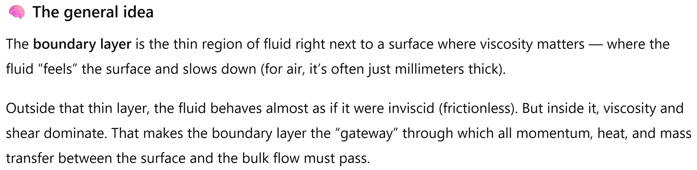
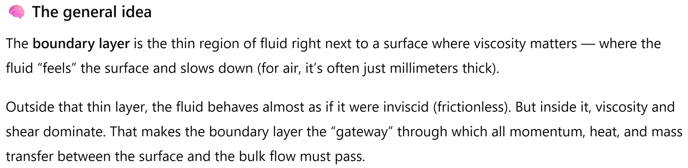

Fluid Mechanics
Boundary layers
Lecturer: Jakob Hærvig
Slides by Jakob Hærvig (AAU Energy) and Jacob Andersen (AAU Build)
The beauty of boundary layers
 

Boundary layer structure
Boundary layer (BL) structure and development for parallel flow
over an infinite flat plate
- $u(y) = 0$ at the surface (no-slip condition)
- $u(y) = U$ far away from surface (free stream condition)
Convenient to define Reynolds number as $\text{Re}_x = x U / \nu$
- Laminar BL: $\text{Re}_x < 5 \times 10^5$:
- Turbulent BL: $\text{Re}_x > 5 \times 10^5$:
Critical Reynolds number varies with surface roughness
and upstream
turbulence
Boundary layer thickness: Standard
Flat plate exposed to flow with free stream velocity, $U$
- Boundary layer thickness $\delta$ defined as:
$\delta = y~~~~~$ where $~~~~~u(y) = 0.99U$
Note: The 99% criterion is kind of arbitrary
Boundary layer thickness: Displacement and momentum thicknesses
Flat plate exposed to flow with free stream velocity, $U$
- Boundary layer displacement thickness $\delta^*$ defined as:
- Think as: Distance the wall should be moved outward to maintain the same volume flow rate for an inviscid flow
- Boundary layer momentum thickness $\theta$ defined as:
- Think as: Distance the wall should be moved outward to maintain the same momentum flow rate for an inviscid flow
$\displaystyle \delta^* = \int_0^{\infty} \left(1-\dfrac{u}{U}\right) \text{d}y$
$\displaystyle \theta = \int_0^{\infty} \dfrac{u}{U} \left(1-\dfrac{u}{U}\right) \text{d}y$
\(~~~~~~~~~~~~~\displaystyle \delta^*bU = \int_0^{\infty} \left( U-u\right) b \text{d}y \)
\(~~~~~~~~~~~~~~~~~~\displaystyle \delta^* = \int_0^{\infty} \left(1-\dfrac{u}{U}\right) \text{d}y \)
Turbulent boundary layer regions
Divided into three regions away from the wall
- Viscous sublayer: Laminar part, viscous effects
- Buffer layer: Transitional part, both viscous and inertial effects
- Log-law layer: Turbulent part, inertial effects dominant
Turbulent boundary layer velocity profile
Based on dimensional analysis, we obtain two dimensionless groups:
- Dimensionless velocity: $u^+ = \overline{u}/u^*$
- Dimensionless position: $y^+ = y u^*/\nu$
- Time-averaged velocity, $\overline{u}$
- Friction velocity, $u^*= \sqrt{\dfrac{\tau_w}{\rho}}~~~~~~~~~~$where $\tau_w = \mu \dfrac{\text{d}\overline{u}}{\text{d}y}|_{y=0}$
- Distance from wall, $y$
Velocity profiles in log-log plot
- Viscous sublayer: Linear profile, $u^+ = y^+~~$ (Eq. 1)
- Valid for $y^+ < 5$
- Log-law layer: Logarithmic profile, $u^+ = \dfrac{1}{2.5} \ln y^+ + 5.0~~$ (Eq. 2)
- Valid for $y^+ > 30$
Laminar boundary layer velocity profile
Boundary layer thickness $\delta$ (Blasius solution)
\( \delta = \dfrac{5x}{\sqrt{\text{Re}_x}} \)Boundary layer displacement thickness $\delta^*$ (Blasius solution)
\( \delta^* = \dfrac{1.721x}{\sqrt{\text{Re}_x}} \)Boundary layer momentum thickness $\theta$ (Blasius solution)
\( \theta = \dfrac{0.664x}{\sqrt{\text{Re}_x}} \)Note: Boundary layer thickness decreases with
increasing $\text{Re}_x$:
\( \delta \to 0 \) as \( \text{Re}_x \to \infty \)
Looking for an analytical solution..
$x$-direction:
\( \rho \)
\( \bigg( \)
\( u \dfrac{\partial u}{\partial x} \)
$y$-direction:
\( \rho \) \( \bigg( \) \( u \dfrac{\partial v}{\partial x} \) \( + \) \( v \dfrac{\partial v}{\partial y} \) \( \bigg) = -\) \( \dfrac{\partial p}{\partial y} \) \( + \) \( \mu \) \( \bigg( \) \( \dfrac{\partial^2 v}{\partial x^2} \) \( + \) \( \dfrac{\partial^2 v}{\partial y^2} \) \( + \) \( \bigg) \)
Continuity equation:
\(\dfrac{\partial u}{\partial x} \) \( + \) \(\dfrac{\partial v}{\partial y}\) \( = 0\)
Boundary conditions:
\(u=v=0 \) at \(y=0\)
\(u=U \) at \(y \rightarrow \infty\)